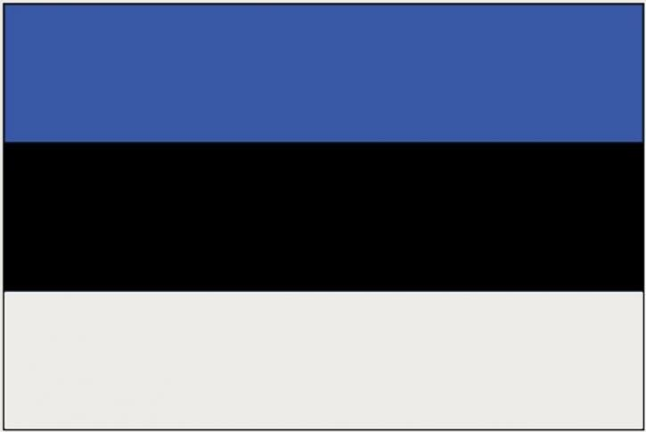

Viro
Maantieteestä
Viron maaseutua täplittävät yli 1 500 järveä, joista suurin on Venäjän rajalla oleva Peipsijärvi. Viron suurimmat joet ovat Narvanjoki ja Emajoki. Virossa on noin 800 saarta. Pinnanmuodoiltaan Viro on melko tasainen. Korkein kohta on Iso Munamäki (vir. Suur Munamägi) Etelä-Virossa, 318 metriä meren pinnan yläpuolella.
Pohjois- ja Länsi-Viro ovat pinnanmuodoiltaan tasaisia, mutta Etelä-Viron pinnanmuodot ovat vaihtelevampia. Länsi-Viron manneralueen pääosa kuuluu Länsi-Viron alankoon, joka on vanhaa merenpohjaa. Pohjois- ja Länsi-Virossa on laaja kalkkikivitasanko, joka on osa Baltian klinttiä. Tasangon reunan kalkkikivitörmästä muodostuu jyrkänteitä, joista korkein on Koillis-Virossa sijaitseva Ontika, jolla on korkeutta 56 metriä. Ontikaa matalampi, mutta kuuluisampi on Saarenmaan Pangan rantatörmä, jolla on pituutta 2,5 kilometriä ja korkeutta 21 metriä. Pohjois- ja Länsi-Viron nummilla on kalkkikiven hajotessa syntyneitä karstiluolia.
Muuta tietoa
| Valtiomuoto: Tasavalta |
| Pinta-ala: 45 339 km2 |
| Väkiluku: 1 318 705 |
| BKT: 25,68 miljardia USD |
| Virallinen kieli: viro |
Suurimmat kaupungit:
|
| Lippu:  |